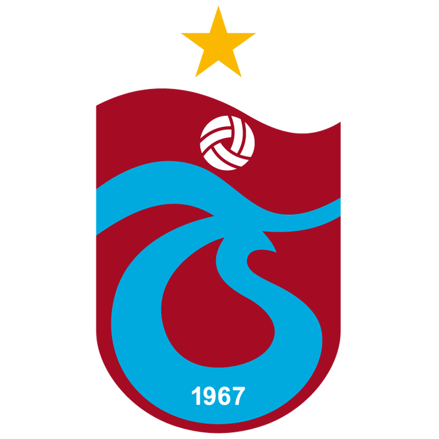
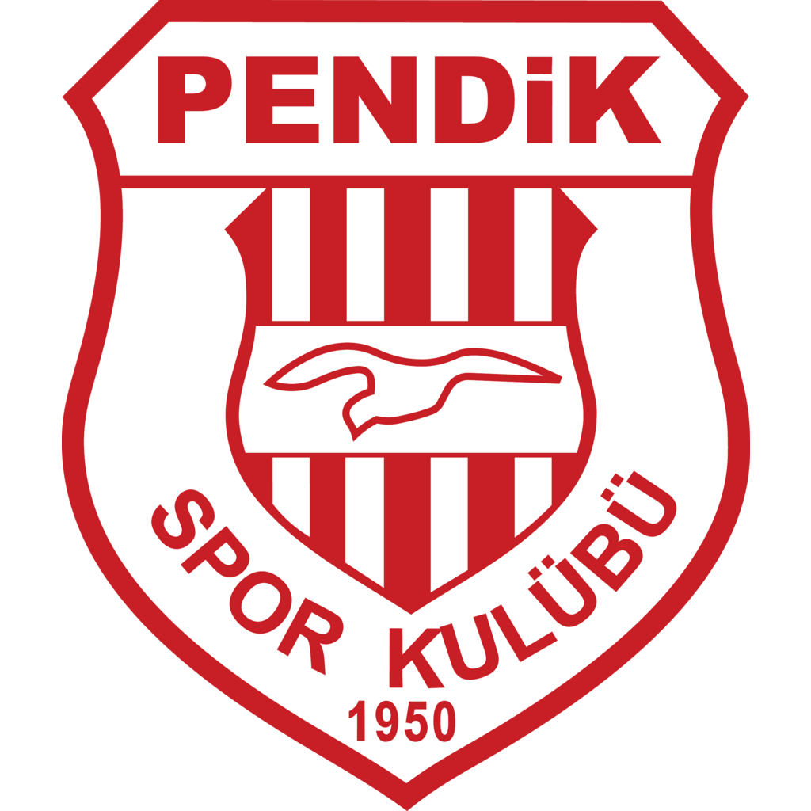
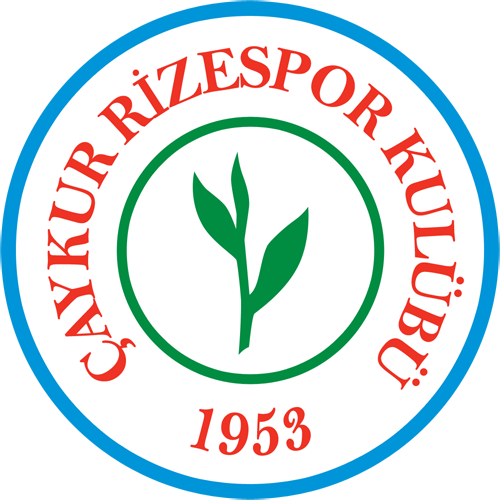
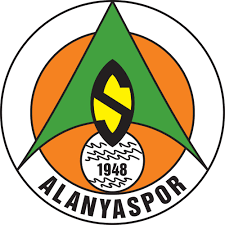
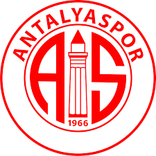

Oynanmış ve bitmiş maçlarımızı buradan görebilirsiniz.
| Tarih | Logo | Ev Sahibi Takım | Logo | Yer | Sonuç |
|---|---|---|---|---|---|
| 27/03/2024 |  | Trabzonspor | |
Papara Park | 3-2 (Fenerbahçe Kazandı) |
| 10/03/2024 | |
Fenerbahçe |  | Ülker Stadyumu | 4-1 (Fenerbahçe Kazandı) |
| 02/03/2024 | Hatayspor | |
Mersin Stadyumu | 2-0 (Fenerbahçe Kazandı) | |
| 24/02/2024 | |
Fenerbahçe | Ülker Stadyumu | 2-1 (Fenerbahçe Kazandı) | |
| 17/02/2024 |  | Çaykur Rizespor | |
Çaykur Didi Stadyumu | 3-1 (Fenerbahçe Kazandı) |
| 11/02/2024 | |
Fenerbahçe |  | Ülker Stadyumu | 2-2 (Berabere) |
| 03/02/2024 |  | Antalyaspor | |
Corendon Airlines Park | 2-0 (Fenerbahçe Kazandı) |